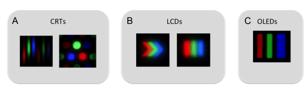
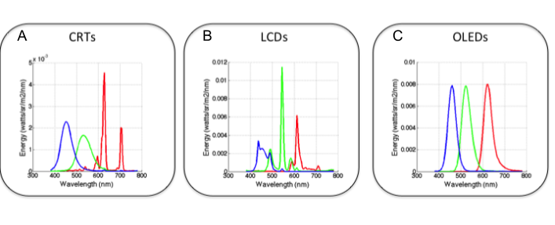

30 Display principles
Suggestions of all kinds for this book draft are welcome — whether it’s fixing small errors, raising bigger questions, or offering new perspectives. Please share comments through GitHub Issues. To make feedback easier to address, please point to the section you have in mind — by section number or a short snippet of text.
30.1 Display principles overview
The text below is adapted from this review chapter. At this time, please also consult that article:
Characterization of Visual Stimuli using the Standard Display Model, 2024
Joyce E. Farrell, Haomiao Jiang, and Brian A. Wandell
Psychology and Department of Electrical Engineering, Stanford University, Stanford, CA 94305
Key Words: Display technology, calibration, modeling, simulation, visual stimuli, psychophysics, pixel pointspread function, spectral power distribution
30.2 From light fields to planar displays
An ideal display system for science and commerce would deliver the complete spectral, spatial, directional, and temporal distribution of light rays, as if these rays arose from a real three-dimensional scene. The full radiometric description of light rays in the three-dimensional scene is called the “light field” (Gershun, 1936; Section 2.4). For vision science, the simplified and related representation is the irradiance the scene produces at the cornea—this is the only part of the scene radiance that the retina encodes. The complete radiometric description of the rays at the cornea, sometimes referred to as the plenoptic function (Adelson and Bergen, 1991), specifies the rate of incident photons from every direction at each point in the pupil plane. To achieve an accurate dynamic reproduction of a scene, the plenoptic function must change as the head and eyes move.
Commonly used scientific displays do not approach this ideal. Instead, most displays emit light rays from a planar surface in a wide range of directions, and the spectral radiance is invariant as the subject changes head and eye position. The displays themselves are limited in various ways; for example, the pixels produce a limited range of spectral power distributions, typically being formed as the weighted sum of three spectral primaries. Despite these limitations, modern displays create a very compelling perceptual experience that captures many important elements of the original scene. The ability to program these displays with computers and digital frame buffers has greatly enlarged the range of stimuli used in visual psychophysics compared to the optical benches and tachistoscopes used by previous generations.
The vast majority of modern displays comprise a two-dimensional matrix of picture elements (pixels) at a density of 100–400 pixels per inch (4–16 pixels per mm). Each pixel typically contains three different light sources (subpixels, Figure 30.1). The pixels are intended to be identical across the display surface (spatial homogeneity).

Most displays are designed with three types of subpixels with spectral power distributions (SPD) that peak in the long-, middle- and short-wavelength regions of the visible spectrum (Figure 30.2). Each type of subpixel is called a display primary. The relative SPD of each primary is designed to be invariant as its intensity is varied (spectral homogeneity). In normal operation, the three subpixel intensities are controlled to match the color appearance of an experimental stimulus (Section 28.6). Three primaries are used because experiments show that subjects can match the color appearance of a wide range of spectral power distributions using the mixture of just three independent light sources (Chapter 28; Wandell 1995, Chapter 4; Wyszecki and Stiles, 1967). Modern displays effectively comprise a very large number of color-matching experiments, one for each pixel on every frame.

30.3 The standard display model
30.3.1 Overview
Display technologies are differentiated by two main factors: the mechanism used to generate light and the spatial configuration of pixels and subpixels (Chapter 31). When designing commercial displays, manufacturers prioritize various performance metrics such as energy efficiency, brightness, spatial resolution, contrast ratio (darkness), color gamut, and refresh/update rates. The relative importance of these parameters varies depending on the intended application.
Despite the diverse array of display architectures, it is possible to identify a few fundamental principles that describe the relationship between electronic control signals and the spectral radiance generated by a display. These widely adopted principles form the basis of a standard display model (Brainard et al., 2002; Post, 1992). This model is phenomenological in nature, meaning it describes observable relationships without necessarily explaining the underlying physical processes. Importantly, this standard display model is applicable not only to current popular displays but also to anticipated future developments in display technology.
The standard display model’s parameters can be determined through a limited number of calibration measurements (Chapter 32). The model, combined with the calibration data, enables precise control over the display’s radiance output. A model is necessary because there are far too many images to calibrate individually (Brainard, 1989). To illustrate, an 8-bit display can produce \(2^{24}\) distinct RGB combinations for a single static image. Furthermore, a \(1024 \times 1024\) pixel display (\(2^{20}\) pixels) has the potential to render an astronomical \(2^{480}\) different images. The standard display model efficiently addresses this complexity by defining a compact set of calibration measurements, which can then be used to predict the spectral radiance for a wide array of images.
Several key measurements are necessary to specify a model for any particular display. First, each subpixel type has a characteristic spectral power distribution (SPD, Figure 30.2). The model assumes that the SPD is the same for all subpixels of a given type and is invariant when normalized for intensity level. Thus, the normalized SPD can be measured using a spectroradiometer that averages the spectral radiance emitted from a region of the display surface.
Second, the absolute level (peak radiance) of the SPD is set by the frame buffer value. The relationship between the frame buffer value and the SPD level is referred to as the gamma-curve. The gamma-curve is assumed to be the same for all subpixels of a given type (shift-invariant), independent of the image content, and monotone increasing.
Third, the standard display model describes the spatial distribution of light emitted by each type of subpixel, called the point spread function (PSF). The standard display model assumes that the PSF is the same for subpixels of a given type (shift-invariant) and independent of the image content.
Finally, most displays refresh the image (frame) at a rate between 30 and 240 times per second. Within each frame, the subpixel intensity can rise and fall, and the frame repetitions and pixel dynamics influence the visibility of motion and flicker. The standard display model assumes that each subpixel has a simple time-invariant impulse response function that is independent of image content. This assumption is frequently violated because of the extensive engineering to control the dynamics of displays (see Chapter 31 on LCDs, CRTs, and OLEDs). Characterizing the display dynamics is particularly important for experiments involving rapidly changing high contrast targets (e.g. random dots).
The standard display model clarifies the measurements needed to calibrate a display. The first two are to measure (a) the normalized spectral radiance distributions for each of the display primaries, and (b) the gamma-curve that specifies the absolute level of the spectral radiance given a particular frame buffer value. It is less common for scientists to measure the subpixel PSFs. These can be measured using a macro-lens and the linear output of a calibrated digital camera (Farrell et al., 2008), but in most cases the function is treated as a single point (impulse). Characterizing the PSF can be meaningful for measurements of fine spatial resolution (e.g., quality of fonts, vernier resolution) where there are significant effects of human optics on retinal image formation.
30.3.2 Spectral radiance and gamma curves
It is common to use a spectral radiometer to measure the spectral radiance emitted by each of the three types of primaries. The standard display model assumes that for each primary the spectral power distribution takes the form \(I(F) P(\lambda)\), where \(P(\lambda)\) is the spectral power distribution of the display when the frame buffer is set to its maximum value and \(0 < I(F) < 1\) is the relative intensity for a frame buffer value of \(F\).
To estimate \(I(F)\) and \(P(\lambda)\), we measure the spectral radiance for a series of different frame buffer levels. An important detail is this: In most displays there is some stray light present even when \(F=0\). This light is usually treated as a fixed offset, \(B(\lambda)\) and subtracted from the calibration data (Brainard et al, 2002). Hence, the measured spectral radiance curves have the form
\[ R(\lambda,F) = I(F)P(\lambda) + B(\lambda) \]
The term \(I\) is the relative intensity of the primary and \(F\) is the frame buffer value. When \(F\) is set to the maximum value, the value of \(I\) is equal to 1. If one subtracts the background spectral power distribution, then when \(I(0)=0\) and the relative intensity is typically modeled as a simple power law (Poynton, 2013) which gives the curve its name.
\[ I = \alpha ~ F^{\gamma} \tag{30.1}\]
For most displays \(B(\lambda)\) is difficult to measure because it is small and negligible compared to the experimental stimuli. In such cases, the radiance is modeled by including a small, wavelength-independent, offset in the gamma curve
\[ \begin{aligned} R(\lambda, F ) &= I(F) P(\lambda) \\ I &= \alpha ~ F^\gamma + B_0 \end{aligned} \]
Historically, the value of \(\gamma\) in manufactured displays has been between 1.8 and 2.4, which is quite significant. If one changes the \(\gamma\) of a display from 1.8 to 2.4, the same frame buffer values will produce very different spectral radiance distributions. Pixels set to the same frame buffer (R,G,B) produce spectral radiances that differ by as much as 10 CIELAB \(\Delta E\) units (median \(\sim 6\ \Delta \text{E}\)). In recent years, manufacturers have converged to a function that is linear at small values, close to \(\gamma = 2.4\) at high values, and overall similar to \(\gamma= 2.2\) (sRGB 2015).
The analytical gamma function is an approximation to the true \(I(F)\). In modern computers, this approximation can be avoided by building a lookup table that stores the nonlinear relationship between the digital control values and the display output, \(I(F)\).
This nonlinearity will continue across technologies because programmers prefer that equal spacing of the digital frame buffer values correspond to equal perceptual spacing (Poynton, 1993; Poynton and Funt, 2014). To maintain this relationship, the display intensity must be nonlinearly related to the frame buffer value (Stevens 1957; Wandell, 1995).
30.3.3 The subpixel point spread functions
The spatial distribution of light from each subpixel is described by a point spread function, \(P(x,y,\lambda)\). The spatial spread of the light from each subpixel can be measured using a high resolution digital camera with a close-up lens (Figure 30.1; Farrell et al, 2008). Furthermore, the spectral and spatial parts of the point spread function are separable:
\[ P(x,y,\lambda)=s(x,y)w(\lambda) \tag{30.2}\]
The subpixel point spread is assumed to have the same form across display positions, that is the subpixel point spread function at pixel \((u,v)\) is \(s(x-u,y-v)w(\lambda)\). And finally, the shape scales with intensity \(I s(x-u,y-v)w(\lambda)\).
The standard display model assumes that point spread functions from adjacent pixels sum. This linearity is an ideal—no display is precisely linear. But display designs generally aim to satisfy these principles and implementations are close enough so that these principles are a good basis for display characterization and simulation.
30.3.4 Linearity
Apart from the static, nonlinear gamma curve, the standard display model is a shift-invariant linear system. That is, given the intensity of each subpixel we compute the expected display spectral radiance as the weighted sum of the subpixel point spread functions. If the subpixel intensities for one image are \(I_1\) with corresponding spectral radiance \(R_1(x,y,\lambda)\), and a second image is \(I_2\) with corresponding spectral radiance \(R_2(x,y,\lambda)\), then the radiance when the image is \(I_1 + I_2\) will be \(R_1(x,y,\lambda) + R_2(x,y,\lambda)\).
The calibration process should test the additivity assumption. Simple tests include checking that the light emitted from the \(i^{\text{th}}\) subpixel does not depend on the intensity of other subpixels (Lyons and Farrell, 1989; Pelli, 1997; Farrell et al, 2008).
30.3.5 Model summary
The standard display model for a steady-state image can be expressed as a simple formula that maps the frame buffer values, \(F\), to the display spatial-spectral radiance \(R(x,y,\lambda)\).
Suppose the gamma function, point spread function, and spectral power distribution of the \(j^{\text{th}}\) subpixel type are \(I_j(v)\), \(s_j(x,y)\), and \(w_j(\lambda)\). Suppose the frame buffer values for the \(j^{\text{th}}\) subpixel type is \(F_j(u,v)\). Then the display spectral radiance across space is predicted to be
\[ R(x,y,\lambda)= \sum_{u,v} \sum_{j=1}^{3} I_j(F_j(u,v)) s_j(x-u,y-v) w_j(\lambda) \tag{30.3}\]
In Chapter 31, we review how major planar and near-eye display technologies generate light and where they adhere to or depart from this model. In Chapter 32, we show how to calibrate a display, test the assumptions of the standard display model, and use simulations coupled with CIELAB and S-CIELAB (Chapter 29) to evaluate display performance.